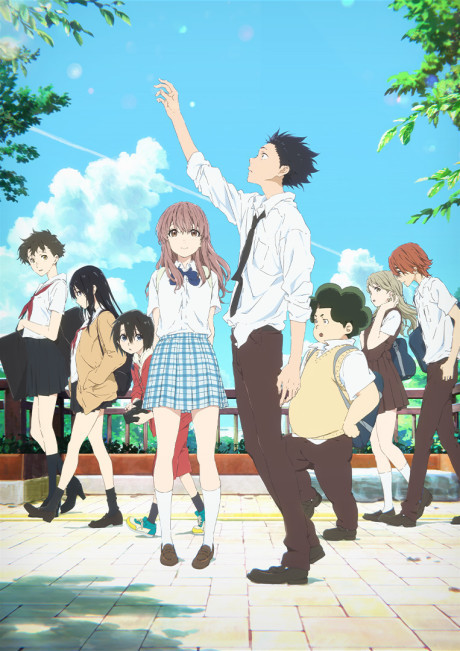

💕 Romance
Your Lie in April (Shigatsu wa Kimi no Uso)

Kousei Arima, um prodígio do piano que perdeu a capacidade de ouvir sua própria música após a morte da mãe, vive preso em um mundo sem cor. Tudo muda quando ele conhece Kaori Miyazono, uma violinista vibrante que transforma sua rotina e o inspira a voltar ao palco. Uma história emocionante sobre amor, arte, traumas e reencontros com a própria alma.
Your Name (Kimi no Na wa)

Mitsuha, uma garota do interior, e Taki, um estudante de Tóquio, começam misteriosamente a trocar de corpo. Conforme tentam entender o fenômeno, criam um laço profundo e descobrem que suas vidas estão conectadas por algo muito maior do que o tempo e a distância. Um romance mágico que mistura destino, memória e emoção.
Josee to Tora to Sakana-tachi (Josee, the Tiger and the Fish)

Tsuneo, um jovem universitário, conhece Josee, uma garota com mobilidade reduzida que vive isolada do mundo. Com personalidades opostas, eles acabam formando uma relação transformadora que desafia limites, medos e expectativas. Um drama sensível sobre liberdade, amor e a coragem de viver plenamente.
A Voz do Silêncio (Koe no Katachi)
Shoya Ishida, um ex-bully que atormentou uma colega surda no passado, busca redenção anos depois, tentando reparar os erros que marcaram suas vidas. Ele reencontra Shoko Nishimiya e inicia uma jornada de perdão, empatia e autodescoberta. Um filme poderoso sobre comunicação, culpa e superação.
Sussurros do Coração (Whisper of the Heart)

Shizuku, uma jovem apaixonada por leitura, descobre que todos os livros que pega na biblioteca já foram emprestados por um mesmo garoto. Conforme tenta descobrir quem ele é, encontra inspiração para perseguir seus sonhos e explorar seu próprio talento. Uma história doce e poética sobre adolescência, criatividade e primeiras paixões.